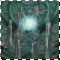
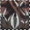
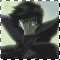

I n f o r m a t i o n /prelude.html
First off, X is a very complex anime and manga series that is full of action and some character developement. It is set in Tokyo, Japan, with the legend that one person holds the power to determine the future of the world.
 There are two sides that are both determined to reach their goals, one side wishes for the world to change, and therefore wants to bring destruction to the Earth. These are the Chi no Ryuu, or the Dragons of Earth, aka the Seven Angels. Opposing them and wishing for peace among the world and prevent the destruction of the world are the Ten no Ryuu, or Dragons of Heaven, aka the Seven Seals.
That one person who must decide upon the fate of the world must chose which side he wishes to reside with, and grant their wish. That person is 16 year old Shirou Kamui, the main character of the show. XD The name Kamui means both "the one who represents the will of the Gods" and "one who hunts the will of the Gods." Kamui has the ability to become either a Dragon of the Earth or Dragon of Heaven. However, it seems that whichever side he chooses, there is only one future for the world...destruction. Perhaps Kamui can save the world from it's fate, perhaps not. There are barriers that form around Tokyo, and the Seven Seals guard the barriers. If the Seven Seals all die, the barriers will be broken and the world will be destroyed. Whichever side the true Kamui chooses, his twin star, the other Kamui, will choose the other side and oppose him. They will then fight for the future of the world, and may the true Kamui win, determining the future of the world.
x
clear x